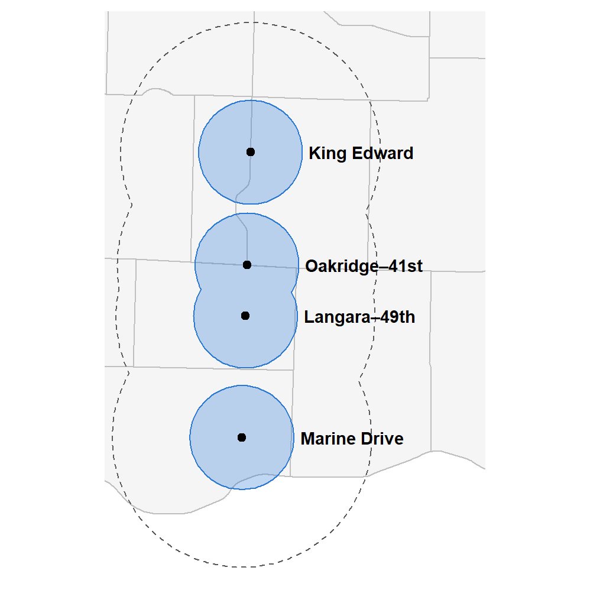
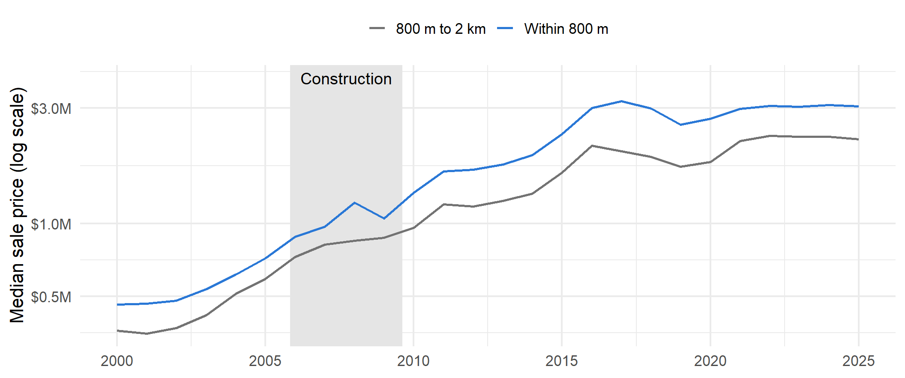
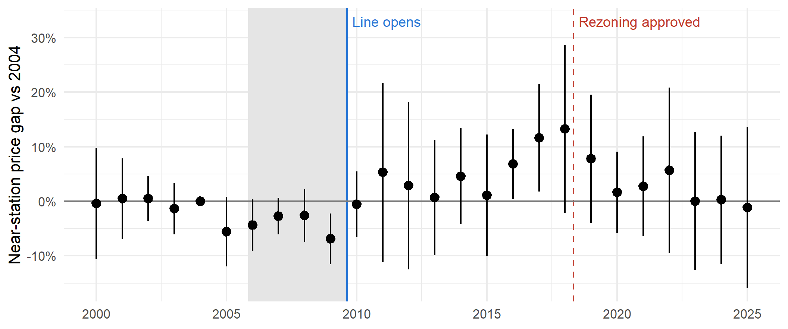
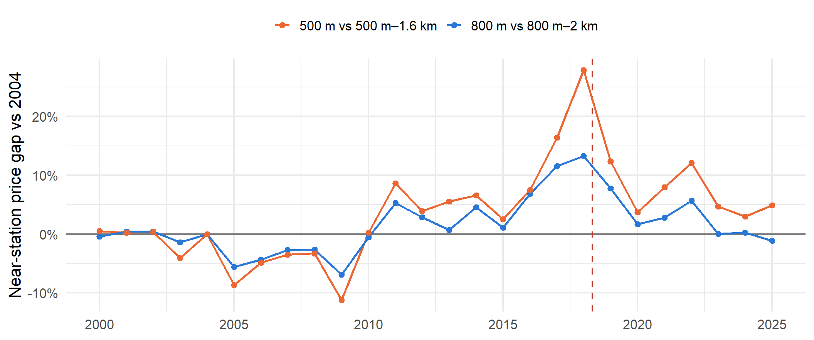

Single-family sales near four Cambie Street stations, 2000–2025
COMM 407 example presentation
Thesis
Code
suppressPackageStartupMessages({library(tidyverse)library(sf)library(fixest)library(tmap)library(VancouvR)})tmap_mode("plot")# The four Canada Line stations (opened August 2009) on residential streets;# the downtown stations replaced existing transit, so they are left outnew_stations <-c("King Edward", "Oakridge - 41st Avenue","Langara - 49th Avenue", "Marine Drive")stations <-get_cov_data("rapid-transit-stations") |>st_as_sf() |>filter(station %in% new_stations) |>st_transform(26910)stopifnot(nrow(stations) ==4)# Single-family sales in the City of Vancouver. Prices of $100,000 or less are# not market sales. 2026 is a partial year.sales_sf <-read_rds("data/bca262.rds") |>filter(juris_label =="City of Vancouver", act_use_cat =="S/F Res",!is.na(lon), price >100000, year(sale_date) <=2025) |>st_as_sf(coords =c("lon", "lat"), crs =4326) |>st_transform(26910)nearest <- stations[st_nearest_feature(sales_sf, stations), ]sales <- sales_sf |>mutate(dist =as.numeric(st_distance(sales_sf, nearest, by_element =TRUE))) |>st_drop_geometry() |>filter(dist <2000) |>mutate(year =year(sale_date), age = year - year_built, near = dist <800)# Event study: the near-station gap in each year relative to 2004, the last# year before construction. Sales without lot size or floor area drop out;# floor area is often blank in 2005-2012.event_study <-function(data) { m <-feols(log(price) ~i(year, near, ref =2004) +log(lotsize) +log(floorarea) + age | year + neigh_label,data = data, cluster =~neigh_label) broom::tidy(m, conf.int =TRUE) |>filter(str_starts(term, "year::")) |>mutate(year =as.integer(str_extract(term, "\\d{4}"))) |>select(year, estimate, conf.low, conf.high) |>bind_rows(tibble(year =2004L, estimate =0, conf.low =0, conf.high =0))}es_base <-event_study(sales)es_no_luxury <-event_study(filter(sales, !neigh_label %in%c("Shaughnessy", "South Granville")))es_500 <-event_study(filter(sales, dist <1600) |>mutate(near = dist <500))avg_gap <-function(es, years) mean(es$estimate[es$year %in% years])pct <-function(x) round(100* (exp(x) -1))# Signed percentage with a typographic minus, for slide textsigned <-function(x) { v <-pct(x)if (v ==0) return("about 0%")paste0(if (v <0) "\u2212"else"+", abs(v), "%")}open_gap <-avg_gap(es_base, 2010:2014)rezone_gap <-avg_gap(es_base, 2016:2019)
The Canada Line did not raise nearby house prices when it opened in 2009. A premium of about 10% appeared only in 2016–2019, as the City moved to rezone single-family lots near the stations.
Evidence: 19,226 single-family sales near four Cambie Street stations, 2000–2025.
Comparison: homes within 800 m of a station against homes 800 m to 2 km away.
Four new stations on a residential street
Code
suppressPackageStartupMessages({library(tidyverse)library(sf)library(fixest)library(tmap)library(VancouvR)})tmap_mode("plot")# The four Canada Line stations (opened August 2009) on residential streets;# the downtown stations replaced existing transit, so they are left outnew_stations <-c("King Edward", "Oakridge - 41st Avenue","Langara - 49th Avenue", "Marine Drive")stations <-get_cov_data("rapid-transit-stations") |>st_as_sf() |>filter(station %in% new_stations) |>st_transform(26910)stopifnot(nrow(stations) ==4)# Single-family sales in the City of Vancouver. Prices of $100,000 or less are# not market sales. 2026 is a partial year.sales_sf <-read_rds("data/bca262.rds") |>filter(juris_label =="City of Vancouver", act_use_cat =="S/F Res",!is.na(lon), price >100000, year(sale_date) <=2025) |>st_as_sf(coords =c("lon", "lat"), crs =4326) |>st_transform(26910)nearest <- stations[st_nearest_feature(sales_sf, stations), ]sales <- sales_sf |>mutate(dist =as.numeric(st_distance(sales_sf, nearest, by_element =TRUE))) |>st_drop_geometry() |>filter(dist <2000) |>mutate(year =year(sale_date), age = year - year_built, near = dist <800)areas <-get_cov_data("local-area-boundary") |>st_as_sf() |>st_transform(26910)zone_near <-st_union(st_buffer(stations, 800))zone_far <-st_union(st_buffer(stations, 2000))stations$label <-c("King Edward"="King Edward","Oakridge - 41st Avenue"="Oakridge–41st","Langara - 49th Avenue"="Langara–49th","Marine Drive"="Marine Drive")[stations$station]# Labels sit 900 m east of each station, just outside its 800 m circlelabels <- stations |>mutate(geometry =st_geometry(stations) +c(900, 0)) |>st_set_crs(26910)map_box <-st_bbox(zone_far)map_box["xmax"] <- map_box["xmax"] +1500# room for the labelstm_shape(areas, bbox = map_box) +tm_polygons(fill ="grey96", col ="grey75") +tm_shape(zone_far) +tm_borders(col ="grey35", lty ="dashed") +tm_shape(zone_near) +tm_polygons(fill ="#2a78d6", fill_alpha =0.3, col ="#2a78d6") +tm_shape(stations) +tm_dots(fill ="black", size =0.5) +tm_shape(labels) +tm_text("label", size =0.9, fontface ="bold", options =opt_tm_text(just ="left")) +tm_layout(frame =FALSE)

Near (blue): within 800 m of a station, a 10-minute walk.
Comparison (dashed): 800 m to 2 km away.
Earlier studies find that rail stations raise nearby home values, often before they open.
New here: the Canada Line, and separating the train from the rezoning that followed.
Homes near the stations always cost more
Code
suppressPackageStartupMessages({library(tidyverse)library(sf)library(fixest)library(tmap)library(VancouvR)})tmap_mode("plot")# Event dates, as decimal years for the charts. Construction began in late# 2005, the line opened on August 17, 2009, and Council approved phase 3 of# the Cambie Corridor Plan on May 1, 2018.construction_start <-decimal_date(ymd("2005-11-01"))line_opens <-decimal_date(ymd("2009-08-17"))rezoning <-decimal_date(ymd("2018-05-01"))# The four Canada Line stations (opened August 2009) on residential streets;# the downtown stations replaced existing transit, so they are left outnew_stations <-c("King Edward", "Oakridge - 41st Avenue","Langara - 49th Avenue", "Marine Drive")stations <-get_cov_data("rapid-transit-stations") |>st_as_sf() |>filter(station %in% new_stations) |>st_transform(26910)stopifnot(nrow(stations) ==4)# Single-family sales in the City of Vancouver. Prices of $100,000 or less are# not market sales. 2026 is a partial year.sales_sf <-read_rds("data/bca262.rds") |>filter(juris_label =="City of Vancouver", act_use_cat =="S/F Res",!is.na(lon), price >100000, year(sale_date) <=2025) |>st_as_sf(coords =c("lon", "lat"), crs =4326) |>st_transform(26910)nearest <- stations[st_nearest_feature(sales_sf, stations), ]sales <- sales_sf |>mutate(dist =as.numeric(st_distance(sales_sf, nearest, by_element =TRUE))) |>st_drop_geometry() |>filter(dist <2000) |>mutate(year =year(sale_date), age = year - year_built, near = dist <800)sales |>summarise(median =median(price), .by =c(year, near)) |>mutate(group =if_else(near, "Within 800 m", "800 m to 2 km")) |>ggplot(aes(year, median /1e6, colour = group)) +annotate("rect", xmin = construction_start, xmax = line_opens, ymin =0,ymax =Inf, fill ="grey90") +# ymin = 0, not -Inf, on a log scaleannotate("text", x = (construction_start + line_opens) /2, y =4,label ="Construction", size =5) +geom_line(linewidth =1) +scale_y_log10(labels = scales::label_dollar(suffix ="M", accuracy =0.1)) +scale_colour_manual(values =c("Within 800 m"="#2a78d6", "800 m to 2 km"="grey45")) +labs(x =NULL, y ="Median sale price (log scale)", colour =NULL) +theme_minimal(base_size =16) +theme(legend.position ="top")

Near-station homes sold for more even in 2000, before the line existed. Comparing levels would credit the train for a gap that was already there.
Comparing changes: no premium after opening
Code
suppressPackageStartupMessages({library(tidyverse)library(sf)library(fixest)library(tmap)library(VancouvR)})tmap_mode("plot")# The four Canada Line stations (opened August 2009) on residential streets;# the downtown stations replaced existing transit, so they are left outnew_stations <-c("King Edward", "Oakridge - 41st Avenue","Langara - 49th Avenue", "Marine Drive")stations <-get_cov_data("rapid-transit-stations") |>st_as_sf() |>filter(station %in% new_stations) |>st_transform(26910)stopifnot(nrow(stations) ==4)# Single-family sales in the City of Vancouver. Prices of $100,000 or less are# not market sales. 2026 is a partial year.sales_sf <-read_rds("data/bca262.rds") |>filter(juris_label =="City of Vancouver", act_use_cat =="S/F Res",!is.na(lon), price >100000, year(sale_date) <=2025) |>st_as_sf(coords =c("lon", "lat"), crs =4326) |>st_transform(26910)nearest <- stations[st_nearest_feature(sales_sf, stations), ]sales <- sales_sf |>mutate(dist =as.numeric(st_distance(sales_sf, nearest, by_element =TRUE))) |>st_drop_geometry() |>filter(dist <2000) |>mutate(year =year(sale_date), age = year - year_built, near = dist <800)did <- sales |>mutate(period =case_when(year <=2004~"before",between(year, 2010, 2014) ~"after")) |>filter(!is.na(period)) |>summarise(mean_log =mean(log(price)), .by =c(near, period)) |>pivot_wider(names_from = period, values_from = mean_log) |>mutate(change = after - before)did_estimate <- did$change[did$near] - did$change[!did$near]did |>arrange(desc(near)) |>transmute(Homes =if_else(near, "Within 800 m", "800 m to 2 km"),`2000–2004`= scales::dollar(exp(before), accuracy =1000),`2010–2014`= scales::dollar(exp(after), accuracy =1000),Change = scales::percent(exp(change) -1, accuracy =1)) |> knitr::kable(align ="lrrr")
Homes
2000–2004
2010–2014
Change
Within 800 m
$514,000
$1,640,000
219%
800 m to 2 km
$456,000
$1,404,000
208%
Typical prices rose 219% near the stations and 208% farther away.
Difference in differences: +4%.
No premium at opening; a premium with rezoning
Code
suppressPackageStartupMessages({library(tidyverse)library(sf)library(fixest)library(tmap)library(VancouvR)})tmap_mode("plot")# Event dates, as decimal years for the charts. Construction began in late# 2005, the line opened on August 17, 2009, and Council approved phase 3 of# the Cambie Corridor Plan on May 1, 2018.construction_start <-decimal_date(ymd("2005-11-01"))line_opens <-decimal_date(ymd("2009-08-17"))rezoning <-decimal_date(ymd("2018-05-01"))# The four Canada Line stations (opened August 2009) on residential streets;# the downtown stations replaced existing transit, so they are left outnew_stations <-c("King Edward", "Oakridge - 41st Avenue","Langara - 49th Avenue", "Marine Drive")stations <-get_cov_data("rapid-transit-stations") |>st_as_sf() |>filter(station %in% new_stations) |>st_transform(26910)stopifnot(nrow(stations) ==4)# Single-family sales in the City of Vancouver. Prices of $100,000 or less are# not market sales. 2026 is a partial year.sales_sf <-read_rds("data/bca262.rds") |>filter(juris_label =="City of Vancouver", act_use_cat =="S/F Res",!is.na(lon), price >100000, year(sale_date) <=2025) |>st_as_sf(coords =c("lon", "lat"), crs =4326) |>st_transform(26910)nearest <- stations[st_nearest_feature(sales_sf, stations), ]sales <- sales_sf |>mutate(dist =as.numeric(st_distance(sales_sf, nearest, by_element =TRUE))) |>st_drop_geometry() |>filter(dist <2000) |>mutate(year =year(sale_date), age = year - year_built, near = dist <800)# Event study: the near-station gap in each year relative to 2004, the last# year before construction. Sales without lot size or floor area drop out;# floor area is often blank in 2005-2012.event_study <-function(data) { m <-feols(log(price) ~i(year, near, ref =2004) +log(lotsize) +log(floorarea) + age | year + neigh_label,data = data, cluster =~neigh_label) broom::tidy(m, conf.int =TRUE) |>filter(str_starts(term, "year::")) |>mutate(year =as.integer(str_extract(term, "\\d{4}"))) |>select(year, estimate, conf.low, conf.high) |>bind_rows(tibble(year =2004L, estimate =0, conf.low =0, conf.high =0))}es_base <-event_study(sales)es_no_luxury <-event_study(filter(sales, !neigh_label %in%c("Shaughnessy", "South Granville")))es_500 <-event_study(filter(sales, dist <1600) |>mutate(near = dist <500))avg_gap <-function(es, years) mean(es$estimate[es$year %in% years])pct <-function(x) round(100* (exp(x) -1))# Signed percentage with a typographic minus, for slide textsigned <-function(x) { v <-pct(x)if (v ==0) return("about 0%")paste0(if (v <0) "\u2212"else"+", abs(v), "%")}open_gap <-avg_gap(es_base, 2010:2014)rezone_gap <-avg_gap(es_base, 2016:2019)ggplot(es_base, aes(year, estimate)) +annotate("rect", xmin = construction_start, xmax = line_opens,ymin =-Inf, ymax =Inf, fill ="grey90") +geom_vline(xintercept = line_opens, colour ="#2a78d6") +geom_vline(xintercept = rezoning, colour ="#c0392b", linetype ="dashed") +annotate("text", x = line_opens +0.2, y =0.33, label ="Line opens",hjust =0, colour ="#2a78d6", size =5) +annotate("text", x = rezoning +0.2, y =0.33, label ="Rezoning approved",hjust =0, colour ="#c0392b", size =5) +geom_hline(yintercept =0, colour ="grey50") +geom_pointrange(aes(ymin = conf.low, ymax = conf.high)) +scale_y_continuous(labels = \(x) paste0(round(100* x), "%")) +labs(x =NULL, y ="Near-station price gap vs 2004") +theme_minimal(base_size =16)

2010–2014: about +3%. 2016–2019: about +10%.
Alternative: a slump in the comparison area?
Code
suppressPackageStartupMessages({library(tidyverse)library(sf)library(fixest)library(tmap)library(VancouvR)})tmap_mode("plot")# The four Canada Line stations (opened August 2009) on residential streets;# the downtown stations replaced existing transit, so they are left outnew_stations <-c("King Edward", "Oakridge - 41st Avenue","Langara - 49th Avenue", "Marine Drive")stations <-get_cov_data("rapid-transit-stations") |>st_as_sf() |>filter(station %in% new_stations) |>st_transform(26910)stopifnot(nrow(stations) ==4)# Single-family sales in the City of Vancouver. Prices of $100,000 or less are# not market sales. 2026 is a partial year.sales_sf <-read_rds("data/bca262.rds") |>filter(juris_label =="City of Vancouver", act_use_cat =="S/F Res",!is.na(lon), price >100000, year(sale_date) <=2025) |>st_as_sf(coords =c("lon", "lat"), crs =4326) |>st_transform(26910)nearest <- stations[st_nearest_feature(sales_sf, stations), ]sales <- sales_sf |>mutate(dist =as.numeric(st_distance(sales_sf, nearest, by_element =TRUE))) |>st_drop_geometry() |>filter(dist <2000) |>mutate(year =year(sale_date), age = year - year_built, near = dist <800)# Event study: the near-station gap in each year relative to 2004, the last# year before construction. Sales without lot size or floor area drop out;# floor area is often blank in 2005-2012.event_study <-function(data) { m <-feols(log(price) ~i(year, near, ref =2004) +log(lotsize) +log(floorarea) + age | year + neigh_label,data = data, cluster =~neigh_label) broom::tidy(m, conf.int =TRUE) |>filter(str_starts(term, "year::")) |>mutate(year =as.integer(str_extract(term, "\\d{4}"))) |>select(year, estimate, conf.low, conf.high) |>bind_rows(tibble(year =2004L, estimate =0, conf.low =0, conf.high =0))}es_base <-event_study(sales)es_no_luxury <-event_study(filter(sales, !neigh_label %in%c("Shaughnessy", "South Granville")))es_500 <-event_study(filter(sales, dist <1600) |>mutate(near = dist <500))avg_gap <-function(es, years) mean(es$estimate[es$year %in% years])pct <-function(x) round(100* (exp(x) -1))# Signed percentage with a typographic minus, for slide textsigned <-function(x) { v <-pct(x)if (v ==0) return("about 0%")paste0(if (v <0) "\u2212"else"+", abs(v), "%")}open_gap <-avg_gap(es_base, 2010:2014)rezone_gap <-avg_gap(es_base, 2016:2019)
The alternative: after the 2016 foreign buyer tax, luxury homes in Shaughnessy and South Granville slumped. A weak comparison area could create a false premium.
If it were true: dropping those two areas would shrink the 2016–2019 premium.
What we see: the premium is about +11% without them, against +10% with them.
The premium is not an artifact of the comparison area.
Homes closest to the stations gained the most
Code
suppressPackageStartupMessages({library(tidyverse)library(sf)library(fixest)library(tmap)library(VancouvR)})tmap_mode("plot")# Event dates, as decimal years for the charts. Construction began in late# 2005, the line opened on August 17, 2009, and Council approved phase 3 of# the Cambie Corridor Plan on May 1, 2018.construction_start <-decimal_date(ymd("2005-11-01"))line_opens <-decimal_date(ymd("2009-08-17"))rezoning <-decimal_date(ymd("2018-05-01"))# The four Canada Line stations (opened August 2009) on residential streets;# the downtown stations replaced existing transit, so they are left outnew_stations <-c("King Edward", "Oakridge - 41st Avenue","Langara - 49th Avenue", "Marine Drive")stations <-get_cov_data("rapid-transit-stations") |>st_as_sf() |>filter(station %in% new_stations) |>st_transform(26910)stopifnot(nrow(stations) ==4)# Single-family sales in the City of Vancouver. Prices of $100,000 or less are# not market sales. 2026 is a partial year.sales_sf <-read_rds("data/bca262.rds") |>filter(juris_label =="City of Vancouver", act_use_cat =="S/F Res",!is.na(lon), price >100000, year(sale_date) <=2025) |>st_as_sf(coords =c("lon", "lat"), crs =4326) |>st_transform(26910)nearest <- stations[st_nearest_feature(sales_sf, stations), ]sales <- sales_sf |>mutate(dist =as.numeric(st_distance(sales_sf, nearest, by_element =TRUE))) |>st_drop_geometry() |>filter(dist <2000) |>mutate(year =year(sale_date), age = year - year_built, near = dist <800)# Event study: the near-station gap in each year relative to 2004, the last# year before construction. Sales without lot size or floor area drop out;# floor area is often blank in 2005-2012.event_study <-function(data) { m <-feols(log(price) ~i(year, near, ref =2004) +log(lotsize) +log(floorarea) + age | year + neigh_label,data = data, cluster =~neigh_label) broom::tidy(m, conf.int =TRUE) |>filter(str_starts(term, "year::")) |>mutate(year =as.integer(str_extract(term, "\\d{4}"))) |>select(year, estimate, conf.low, conf.high) |>bind_rows(tibble(year =2004L, estimate =0, conf.low =0, conf.high =0))}es_base <-event_study(sales)es_no_luxury <-event_study(filter(sales, !neigh_label %in%c("Shaughnessy", "South Granville")))es_500 <-event_study(filter(sales, dist <1600) |>mutate(near = dist <500))avg_gap <-function(es, years) mean(es$estimate[es$year %in% years])pct <-function(x) round(100* (exp(x) -1))# Signed percentage with a typographic minus, for slide textsigned <-function(x) { v <-pct(x)if (v ==0) return("about 0%")paste0(if (v <0) "\u2212"else"+", abs(v), "%")}open_gap <-avg_gap(es_base, 2010:2014)rezone_gap <-avg_gap(es_base, 2016:2019)bind_rows(`800 m vs 800 m–2 km`= es_base, `500 m vs 500 m–1.6 km`= es_500,.id ="zone") |>ggplot(aes(year, estimate, colour = zone)) +geom_hline(yintercept =0, colour ="grey50") +geom_vline(xintercept = rezoning, colour ="#c0392b", linetype ="dashed") +geom_line(linewidth =1) +geom_point() +scale_colour_manual(values =c(`800 m vs 800 m–2 km`="#2a78d6",`500 m vs 500 m–1.6 km`="#eb6834")) +scale_y_continuous(labels = \(x) paste0(round(100* x), "%")) +labs(x =NULL, y ="Near-station price gap vs 2004", colour =NULL) +theme_minimal(base_size =16) +theme(legend.position ="top")

Closer homes show a larger premium at the rezoning peak, consistent with rezoning near the stations.
What this analysis cannot tell us
Timing, not proof. The premium coincides with rezoning, but other changes near the stations in 2016–2018 cannot be ruled out.
Single-family homes only. Condo prices near the stations may have responded differently.
Who buys after rezoning. Near-station buyers after 2016 may be developers assembling land, so prices reflect redevelopment value.
Wide intervals. Standard errors are clustered by only 11 neighbourhoods.
Takeaways
Opening the Canada Line did not lift nearby single-family prices.
The premium came with rezoning: land near stations became worth more when the City allowed more homes on it.
Transit’s value to landowners depends on zoning. Policies that capture land value near stations should be tied to rezoning, not just to the train.
Backup: Sources
Gibbons, S., and S. Machin (2005). “Valuing rail access using transport innovations.” Journal of Urban Economics 57(1): 148–169.
McMillen, D. P., and J. McDonald (2004). “Reaction of house prices to a new rapid transit line: Chicago’s Midway Line, 1983–1999.” Real Estate Economics 32(3): 463–486.
City of Vancouver (2018). Cambie Corridor Plan, approved by Council on 1 May 2018.
Data: BC Assessment sales (course file bca262.rds); City of Vancouver Open Data.
Backup: Decision log
Four stations only. The downtown stations replaced existing transit, so they cannot show a new-station effect.
800 m for “near”. A 10-minute walk. A 500 m zone gives the same pattern.
2004 as the reference year. Construction began in late 2005; earlier years test whether the two areas moved together.
Found: blank floor areas in 2005–2012. Floor area is missing for 14% of these sales, against 3% in other years. The regression silently dropped them. Without size controls the timing is the same.
Canada Line, not Millennium Line. The Millennium Line opened in 2002, leaving less than three years of sales before opening.
Backup: AI use
Tool: Claude, an AI assistant.
Used for: drafting the R code for distances, the event study, and the charts.
Checked: the four stations on the map; missing values by year (which revealed the blank 2005–2012 floor areas); the event study’s pre-2005 years; the Cambie Corridor Plan dates against City of Vancouver documents.